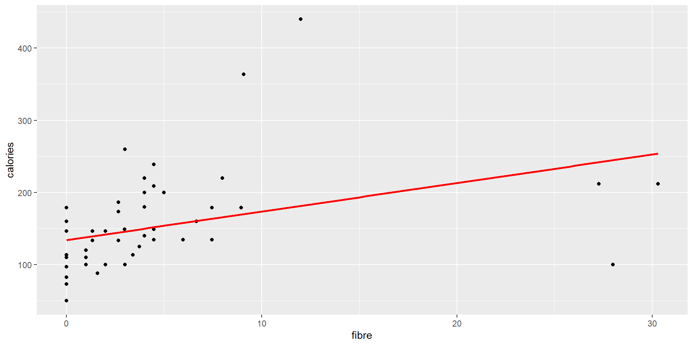

Regresión lineal simple
LFIS 325 - 2022/02
Eloy Alvarado Narváez
Universidad de Valparaíso
10/11/22
Regresión lineal simple
Un modelo de regresión es la manera formal de expresar dos ingredientes esenciales de una relación estadística:
La tendencia de la variable respuesta \(Y\) a variar junto a la variable predictora de manera sistemática
Una dispersión de puntos alrededor de la curva de una relación estadística.
Estas dos características están incorporadas en un modelo de regresión al postular que:
Hay una distribución de probabilidad de \(Y\) para cada nivel de \(X\).
Las medias de estas distribuciones de probabilidad varían de manera sistemática con \(X\).
Definición formal
Un modelo de regresión básico donde sólo hay una variable predictora y la función de regresión es lineal se define como:
\[Y_i=\beta_0+\beta_1 X_i + \varepsilon_i\]
donde,
- \(Y_i\) es el valor de la varible respuesta en la i-ésima observación
- \(\beta_0\) y \(\beta_1\) son parámetros
- \(X_i\) es una constante conocida: el valor de la variable predictora en la i-ésima observación.
- \(\varepsilon_i\) es un término de error aleatorio con meadia \(\mathbb{E}(\varepsilon_i)=0\) y varianza \(\mathbb{V}(\varepsilon_i)=\sigma^2\)
- \(\varepsilon_i\) y \(\varepsilon_j\) no están correlacionados, por lo que su covarianza es cero.
Esto modelo se le conoce como modelo de regresión lineal simple.
Características importantes del modelo de regresión lineal simple
La respuesta \(Y_i\) en la i-ésimo ensayo es la suma de dos componentes: - El término constante \(\beta_0+\beta_1 X_i\) y, - El término aleatorio \(\varepsilon_i\). Por lo que \(Y_i\) es una variable aleatoria
Debido a que \(\mathbb{E}(\varepsilon_i)=0\), sigue que:
\[\mathbb{E}(Y_i)=\mathbb{E}(\beta_0+\beta_1 X_i + \varepsilon_i)=\beta_0+\beta_1 X_i + \mathbb{E}(\varepsilon_i)= \beta_0+\beta_1 X_i\]
Así, la respuesta \(Y_i\), cuando el nivel de \(X\) en el i-ésimo ensayo es \(X_i\), viene desde una distribución de probabilidad cuya media está dada por:
\[\mathbb{E}(Y_i)=\beta_0+\beta_1 X_i\]
Sabremos que la función de regresión para este modelo es \(\mathbb{E}(Y)=\beta_0+\beta_1 X\)
Debido a que la función de regresión relaciona la media de la distribución de probabilidad de \(Y\) para un \(X\) dado para el nivel de \(X\).
Características importantes del modelo de regresión lineal simple: continuación
La respuesta \(Y_i\) en el i-ésimo ensayo excede o queda bajo el valor de la función de regresión por la cantidad del término \(\varepsilon_i\). Además, Los errores \(\varepsilon_i\) se asumen que tienen varianza constante \(\sigma^2\), por lo que la variable respuesta \(Y_i\) tiene la misma varianza constante.
Así, el modelo de regresión lineal simple asume que la distribución de probabilidad de \(Y\) tiene la misma varianza \(\sigma^2\), independiente del nivel de la variable predictora \(X\).
Los errores se asumen independientes. Debido a que los términos \(\varepsilon_i\) y \(\varepsilon_j\) no están correlacionados, también no lo estarán las respuestas \(Y_i\) e \(Y_j\).
En resumen, el modelo de regresión lineal simple implica que la respuesta \(Y_i\) viene desde una distribución de probabilidad cuyas medias son \(\mathbb{E}(Y_i)=\beta_0+\beta_1 X_i\) y cuyas varianzas son \(\sigma^2\), para todos los niveles de \(X\). Además, dos respuestas distintas \(Y_i\) e \(Y_j\) no están correlacionadas.
Interpretación de los parámetros de regresión
Los parámetros de regresión \(\beta_0\) y \(\beta_1\) en un modelo de regresión lineal simple son llamados coeficientes de regresión, siendo \(\beta_1\) la pendiente y \(\beta_0\) el intercepto. El primero indica el cambio en la media de la distribución de probabilidad de \(Y\) por el incremento unitario en \(X\).
Cuando el alcance del modelo incluye \(X=0\), \(\beta_0\) entrega la media de la distribución de probabilidad de \(Y\) en \(X=0\). Cuando el alcance del modelo no incluye \(X=0\), \(\beta_0\) no tienen ninguna interpretación particular como termino separado en la regresión.
Teorema de Gauss-Markov
Bajo las condiciones de un modelo de regresión lineal simple, los estimadores de mínimos cuadrados \(b_0\) y \(b_1\) son estimadores insesgados y tienen mínima varianza entre los estimadores insesgados lineales.
Este teorema establece que \(b_0\) y \(b_1\) son estimadores insesgados, por lo que:
\[\mathbb{E}(b_0)=\beta_0 \hspace{40pt} \mathbb{E}(b_1)=\beta_1\]
Por lo que ninguno de estos estimadores tiende a sobrestimar o subestimar sistemáticamente. Segundo, el teorema establece que los estimadores \(b_0\) y \(b_1\) son más precisos (esto es, su distribución muestral es menos variable) que cualquier otro estimador perteneciente a la clase de estimadores insesgados que son funciones lineales de las observaciones \(Y_1,\dots,Y_n\).
Los estimadores \(b_0\) y \(b_1\) son funciones lineal de \(Y_i\).
Propiedades del ajuste de regresión
El ajuste de regresión lineal al usar el método de mínimos cuadrados tiene un número de propiedades que valen la pena mencionar. Estas propiedades de los estimadores de mínimos cuadrados de una función de regresión no aplican para todos los modelos de regresión.
La suma de los residuos es cero: \(\sum_{i=1}^{n} e_i = 0\)
La suma de los valores observados \(Y_i\) es igual a la suma de los valores ajustados \(\widehat{Y}_i\):
\[\sum_{i=1}^{n} Y_i = \sum_{i=1}^{n} \widehat{Y}_i\]
De esto último, se desprende que la media de los valores ajustados \(\widehat{Y}_i\) es la misma que la media de los valores observados \(Y_i\).
Propiedades del ajuste de regresión: continuación
- La suma de los residuos ponderados es cero cuando el i-ésimo residuo es ponderado con el nivel de la variable predictora i-ésima, esto es:
\[\sum_{i=1}^{n} X_i e_i = 0\]
- Una consecuencia de las propiedades 1 y 3, es que la suma de los pesos ponderados es cero cuando el i-ésimo residuo es ponderado con el valor ajustado de la i-ésima variable respuesta, esto es:
\[\sum_{i=1}^{n} \widehat{Y}_i e_i = 0\]
- La recta de regresión siempre pasa por el punto \((\overline{X},\overline{Y})\).
Inferencia sobre los parámetros de regresión
En lo que sigue, realizaremos inferencia sobre los parámetros del modelo de regresión:
\[Y_i=\beta_0+\beta_1 X_i + \varepsilon_i\]
En donde \(\beta_0\) y \(\beta_1\) son parámetros, \(X_i\) son constantes conocidas y \(\varepsilon_i\) son independientes \(N(0,\sigma^2)\). Esto último, es un supuesto adicional al establecido en la definición formal que hemos visto.
Inferencia sobre la pendiente
Frecuentemente es de particular interés la inferencia sobre el parámetro de la pendiente de regresión, pues nos entrega una noción de cambio medio por unidad en la variable regresora. Un tipo de test relevante en este contexto es:
\[H_0: \beta_1=0 \hspace{20pt} H_1: \beta_1\ne 0\]
Este test de hipótesis es relevante debido a que cuando \(\beta_1=0\), no existe una asociación lineal entre las variables \(X\) e \(Y\).
En el caso de que el término de error en el modelo de regresión sea normal, la condición de que \(\beta_1=0\) implica aún más cosas. Debido a que en este modelo todas las distribución de probabilidades de \(Y\) son normales con varianza constante, y que las medias son iguales cuando \(\beta_1=0\), sigue que las distribuciones de probabilidad de \(Y\) son idénticas cuando \(\beta_1=0\).
Así, \(\beta_1=0\) para el modelo de regresión lineal normal implica que no sólo no existe relación lineal entre \(X\) e \(Y\), pero además no existe ningún tipo de relación entre \(Y\) y \(X\), dado que las distribuciones de probabilidad de \(Y\) son idénticas para todos los niveles de \(X\).
Distribución muestral de \(b_1\)
Por lo visto antes, sabemos que el estimador puntual de \(b_1\) está dado por:
\[b_1=\dfrac{\sum (X_i-\overline{X})(Y_i - \overline{Y})}{\sum (X_i-\overline{X})^2}\]
La distribución muestral de \(b_1\) hace referencia a los diferentes valores de \(b_1\) que serían obtenidos con un muestreo repetido cuando los niveles de la variable predictora \(X\) se mantiene constante entre las diferentes muestras. Para el modelo de regresión normal, la distribución muestral de \(b_1\) es normal con media y varianza dada por:
\[\mathbb{E}(b_1)=\beta_1\qquad \qquad\mathbb{V}(b_1)=\dfrac{\sigma^2}{\sum (X_i-\overline{X})^2}\]
Para mostrar esto, debemos identificar que \(b_1\) es una combinación lineal de las observaciones \(Y_i\).
Normalidad, media y varianza
Debido a que el término \(b_1\) es una combinación lineal de \(Y_i\), y este último son variables aleatoria normales independientes, sigue que \(b_1\) también lo es.
La insesgadez del estimador puntual de \(b_1\) es debido al teorema de Gauss-Markov, sigue que:
\[\begin{align*} \mathbb{E}(b_1)&=\mathbb{E}\left(\sum k_i Y_i\right)=\sum k_i \mathbb{E}(Y_i)= \sum k_i(\beta_0+\beta_1 X_i)\\ &= \beta_0 \sum k_i + \beta_1 \sum k_i X_i = \beta_1 \end{align*}\] En cuanto a la varianza de \(b_1\), sólo necesitamos recordar que \(Y_i\) son variables aleatorias independientes, cada una con varianza \(\sigma^2\) y que \(k_i\) son constantes. Por lo que: \[\begin{align*} \mathbb{V}(b_1)&=\mathbb{V}\left(\sum k_i Y_i\right)=\sum k_{i}^{2} \mathbb{V}(Y_i)\\ &=\sum k_{i}^{2} \sigma^2=\sigma^2 \sum k_{i}^{2}\\ &= \dfrac{\sigma^2}{\sum (X_i -\overline{X})^2} \end{align*}\]
Varianza estimada
Podemos estimar la varianza de la distribución muestral de \(b_1\):
\[\mathbb{V}(b_1)=\dfrac{\sigma^2}{\sum (X_i - \overline{X})^2}\]
Reemplazando el parámetro \(\sigma^2\) con el ECM, el estimador insesgado de \(\sigma^2\):
\[\widehat{\mathbb{V}(b_1)}=\dfrac{MSE}{\sum (X_i - \overline{X})^2}\]
Esta estimación puntual es un estimador insesgada de \(\mathbb{V}(b_1)\). Tomando la raíz cuadrado podemos obtener la estimación puntual para la desviación estándar.
Distribución muestral útil
Con vistas en obtener intervalos de confianza para los parámetros de regresión, necesitamos obtener las distribuciones muestrales de cantidades pivotales, entre ellas la cantidad:
\[(b_1-\beta_1)/\sqrt{\widehat{\mathbb{V}(b_1)}}\]
Debido a que \(b_1\) está distribuido normalmente, sabemos que la estandarización:
\[\dfrac{(b_1-\beta_1)}{\sqrt{\mathbb{V}(b_1)}}\]
es una variable aleatoria normal estándar. En la práctica, no se tiene acceso a la varianza teórica por lo que esta cantidad debe ser estimada por \(\widehat{\mathbb{V}(b_1)}\) por que estamos particularmente interesados en la distribución de \((b_1-\beta_1)/\sqrt{\widehat{\mathbb{V}(b_1)}}\)
Distribución muestral útil: continuación
Cuando una estadístico está estandarizado pero el denominador es una estimación de la desviación estándar en vez de su valor real, se le llama estadístico estudentizado. Un teorema importante en estadística establece que el estadístico:
\[\dfrac{(b_1-\beta_1)}{\sqrt{\widehat{\mathbb{V}(b_1)}}}\sim t(n-2)\]
Para el modelo de regresión que estamos estudiando. Esto viene del hecho que \(SSE/\sigma^2 \sim \chi^2(n-2)\) y es independiente de \(b_0\) y \(b_1\).
Intervalo de confianza para la pendiente
Debido a que esta cantidad sigue una distribución t-student, podemos establecer que:
\[\mathbb{P}(t(\alpha/2,n-2)\leq (b_1-\beta_1)/\sqrt{\widehat{\mathbb{V}(b_1)}} \leq t(1-\alpha/2,n-2))=1-\alpha\]
Luego, operando de igual manera que en la construcción de intervalos de confianza usual (vía pivote). Podemos llegar a un intervalo de confianza para \(\beta_1\):
\[\left[ b_1 \pm t(1-\alpha/2, n-2) \sqrt{\widehat{\mathbb{V}(b_1)}}\right]\]
Test de hipótesis para la pendiente
Debido a que:
\[\dfrac{(b_1-\beta_1)}{\sqrt{\widehat{\mathbb{V}(b_1)}}}\sim t(n-2)\]
Toda la teoría de test de hipótesis usuales es válida (tests unilaterales y bilaterales).
Tenemos particular interés en un test del tipo:
\[H_0: \beta_1 = 0 \hspace{20pt} H_1:\beta_1 \neq 0\]
Pues con ello probamos si existe una asociación lineal entre las variables del modelo bajo un cierto nivel de confianza.
Inferencia sobre el intercepto
Como lo mencionamos antes, rara vez tendremos interés en hacer inferencia sobre el parámetro \(\beta_0\), y estos son sólo válidos cuando el rango de la variable predictora incluye \(X=0\).
Como hemos visto antes la estimación puntal del intercepto está dado por:
\[b_0=\overline{Y}-b_1\overline{X}\]
Para el modelo de regresión en estudio, la distribución muestral de \(b_0\) es normal, con media y varianza:
\[\mathbb{E}(b_0)=\beta_0\qquad \qquad \mathbb{V}(b_0)=\sigma^2\left[ \dfrac{1}{n}+\dfrac{\overline{X}^2}{\sum (X_i-\overline{X})^2}\right]\]
La normalidad es obtenida debido a que \(b_0\) al igual que \(b_1\), es una combinación lineal de observaciones \(Y_i\). Al igual que antes, una estimador de la varianza viene dado al reemplazar \(\sigma^2\) por su estimación puntual (ECM). El estimador de la desviación estándar es obtenido aplicando raíz cuadrada.
Intervalo de confianza para el intercepto
Al igual que antes, se tiene que:
\[\dfrac{b_0-\beta_0}{\sqrt{\widehat{\mathbb{V}(b_0)}}}\sim t(n-2)\]
para este modelo de regresión. Así, los intervalos de confianza pueden ser construidos al igual que para \(\beta_1\). Esto es:
\[\left[ b_0 \pm t(1-\alpha/2, n-1)\sqrt{\widehat{\mathbb{V}(b_0)}}\right]\]
Análisis de Varianza para análisis de regresión
Introducción
Con lo anterior, ya hemos visto gran parte de la teoría de un modelo de regresión básico. En lo que sigue, estudiaremos el análisis de regresión desde la perspectiva de análisis de varianza.
Nociones básicas: El enfoque desde el análisis de varianza se base en particionar la suma de cuadrado y grados de libertad asociados con la variable respuesta \(Y\). Identificaremos 3 términos que usaremos frecuentemente:
Suma de cuadrados total (SSTO): \(\sum (Y_i - \overline{Y})^2\)
Suma de los cuadrados del error (SSE): \(\sum (Y_i - \hat{Y}_i)^2\)
Suma de los cuadrados de la regresión (SSR): \(\sum (\hat{Y}_i-\overline{Y})^2\)
en donde se tiene la relación:
\[SSTO=SSE+SSR\]
Desglose de los grados de libertad
Al igual que para la varianza, podemos desglosar los grados de libertad. Es claro ver que:
SSTO tiene asociado \(n-1\) grados de libertad, debido a que estimamos la media poblacional.
SSE tiene asociado \(n-2\) grados de libertad, debido a que para obtener \(\hat{Y}_i\) debemos estimar \(\beta_0\) y \(\beta_1\)
SSR tiene asociado \(1\) grado de libertad debido a que los valores ajustados son calculados a partir de la recta de regresión, por lo que \(2\) grados de libertad están a asociado a esta, pero uno de ello es perdido debido a la estimación \(\overline{Y}\).
Así, se tiene que:
\[n-1=1+(n-2)\]
Cuadrados medios
Llamamos cuadrados medios a las sumas cuadradas divididas por sus grados de libertad respectivos. Por lo que tenemos:
Error cuadrático medio: \(\dfrac{SSE}{n-2}\)
Cuadrado medio de regresión: \(\dfrac{SSR}{1}\)
En este caso, los cuadrados medios no son aditivos
Tabla ANOVA
Lo que hemos visto anteriormente, puede ser resumido en la tabla ANOVA usual, en donde se incorporó además la esperanza de los cuadrados medios.
| F.V. | SS | g.l. | MS | \(\mathbf{\mathbb{E}(MS)}\) |
|---|---|---|---|---|
| Regresión | \(SSR = \sum (\hat{Y}_i-\overline{Y})^2\) | \(1\) | \(MSR=SSR\) | \(\sigma^2+\beta_{1}^{2}\sum (X_i-\overline{X})^2\) |
| Error | \(SSE = \sum (Y_i - \hat{Y}_i)^2\) | \(n-2\) | \(MSE=\dfrac{SSE}{n-2}\) | \(\sigma^2\) |
| Total | \(SSTO=\sum (Y_i - \overline{Y})^2\) | \(n-1\) |
Test F
El enfoque de análisis de varianza nos permite realizar fácilmente test para modelos de regresión (y otros modelos lineales). Por ejemplo, consideremos:
\[H_0: \beta_1 = 0 \hspace{20pt} H_1:\beta_1 \neq 0\]
Estadístico de prueba
Bajo este enfoque consideramos el estadístico \(F^*\), definido como:
\[F^*=\dfrac{MSR}{MSE}\]
Distribución muestral de \(F^*\)
Es posible mostrar que bajo \(H_0\), \(F^*\) sigue una distribución \(F(1,n-2)\)
Test F: continuación
Regla de decisión
Debido a que \(F^*\) sigue una distribución \(F(1,n-2)\) bajo \(H_0\), la regla de decisión será:
Si \(F^* \leq F(1-\alpha; 1,n-2)\), optamos por \(H_0\)
Si \(F^* > F(1-\alpha; 1,n-2)\), optamos por \(H_1\)
Medidas de asociación lineal entre X e Y
Hasta ahora no hemos definido ningún nivel de asociación lineal para las variables en estudio, pues nos concentramos en la regresión misma, su inferencia y utilidad de predicción, pero existen casos en los cuales la asociación lineal en sí misma es de principal interés. Para determinar el grado de asociación lineal, utilizamos el coeficiente de determinación y correlación
Coeficiente de determinación
El coeficiente de determinación lo definimos como:
\[R^2=\dfrac{SSR}{SSTO}=1-\dfrac{SSE}{SSTO}\]
y lo interpretamos como la proporción de la variabilidad que es explicada por el ajuste de regresión lineal.
Este coeficiente se mueve entre 0 y 1, siendo 1 un ajuste perfecto. Un buen ajuste de regresión suele estar entre 0.7 - 0.9, pero esto puede variar dependiendo del contexto del problema.
Limitaciones del coeficiente de determinación
Un coeficiente de determinación alto no indica que se puedan hacer predicciones buenas
Un coeficiente de determinación alto no indica que el ajuste es necesariamente bueno
Un coeficiente de determinación cercano a cero no indica que \(X\) e \(Y\) no estén relacionados.
Coeficiente de correlación
Este coeficiente puede ser definido como la raíz del coeficiente de determinación.
\[r=\pm \sqrt{R^2}\]
y lo interpretamos como el coeficiente de correlación de Pearson.
Aplicación computacional
Aplicación computacional: continuación
Call:
lm(formula = calories ~ fibre, data = UScereal)
Residuals:
Min 1Q Median 3Q Max
-144.73 -28.07 -17.48 15.51 258.48
Coefficients:
Estimate Std. Error t value Pr(>|t|)
(Intercept) 134.117 8.522 15.738 <2e-16 ***
fibre 3.950 1.181 3.344 0.0014 **
---
Signif. codes: 0 '***' 0.001 '**' 0.01 '*' 0.05 '.' 0.1 ' ' 1
Residual standard error: 57.97 on 63 degrees of freedom
Multiple R-squared: 0.1507, Adjusted R-squared: 0.1372
F-statistic: 11.18 on 1 and 63 DF, p-value: 0.001396Aplicación computacional: continuación
2.5 % 97.5 %
(Intercept) 117.087793 151.14595
fibre 1.589422 6.31138Analysis of Variance Table
Response: calories
Df Sum Sq Mean Sq F value Pr(>F)
fibre 1 37572 37572 11.18 0.001396 **
Residuals 63 211723 3361
---
Signif. codes: 0 '***' 0.001 '**' 0.01 '*' 0.05 '.' 0.1 ' ' 1Diagnóstico
Cuando realizamos un modelo de regresión, como por ejemplo el modelo de regresión lineal simple antes visto, frecuentemente no podemos estar seguros por adelantado si el modelo es apropiado para aplicación que se le desea dar.
Muchas de las características del modelo, tales como la linealidad de la función de regresión o normalidad de los errores podría no ser apropiada, por lo que toma relevancia saber si el modelo puede ser aplicado.
En lo que sigue estudiaremos métodos gráficos y test formales, para saber si un modelo es apropiado usarlo. Nos concentramos en el modelo de regresión lineal simple, pero los mismos principios son válidos para todos los modelos estadísticos que veremos.
Diagnóstico para las variables predictoras
Primero debemos analizar las variables predictora para detectar la presencia de datos anómalos o outliers, que puedan influenciar la viabilidad del modelo.
La presencia de outliers, puede provocar residuos grandes en magnitud, influenciando enormemente el ajuste de regresión.
Diagnóstico para residuos
En general, los gráficos de diagnósticos utilizando directamente la variable respuesta \(Y\) no son muy útiles en el análisis de regresión debido a que el valor de las observaciones en la variable respuesta son una función del nivel de la variable predictora. Por lo que usualmente, se analizan indirectamente mediante la inspección de los residuos.
Los residuos \(e_i\) son la diferencia entre el valor observado \(Y_i\) y el valor ajustado \(\hat{Y}_i\):
\[e_i=Y_i-\hat{Y}_i\]
Estos pueden ser considerados como el error observado, a diferencia de valor real del error \(\varepsilon_i\) en el modelo de regresión:
\[\varepsilon_i=Y_i - \mathbb{E}(Y_i)\]
Para el modelo de regresión lineal simple, los errores \(\varepsilon_i\) se asumen variables aleatorias normales independientes, con media 0 y varianza constante \(\sigma^2\). Si el modelo es apropiado para los datos disponibles, el residuo observado \(e_i\) deben reflejar las propiedades que se asumieron para \(\varepsilon_i\).
Esta es la idea básica del análisis de residuos, una herramienta útil para evaluar la viabilidades de los modelos.
Propiedades de los residuos: media
La media de los \(n\) residuos \(e_i\) para el modelo de regresión lineal simple es:
\[\overline{e}=\dfrac{\sum e_i}{n}=0\]
donde \(\overline{e}\) denota la media de los residuos. Así, debido a que \(\overline{e}\) es siempre 0, este no provee información sobre si los errores reales \(\varepsilon_i\) tienen valor esperado \(\mathbb{E}(\varepsilon_i)=0\).
Propiedades de los residuos: varianza
La varianza de los \(n\) residuos \(e_i\) está definida como:
\[s^2=\dfrac{\sum (e_i - \overline{e})^2}{n-2}=\dfrac{\sum e_{i}^{2}}{n-2}=\dfrac{SSE}{n-2}=MSE\]
Si el modelo es apropiado, el error cuadrático medio es un estimador insesgado de la varianza del error \(\sigma^2\).
Propiedades de los residuos: no independencia
Los residuos \(e_i\) no son variables aleatorias independientes debido a que involucran los valores ajustados \(\hat{Y}_i\), los cuales están basado en la misma función de regresión ajustada. Como resultado de lo anterior, los residuos para el modelo de regresión están sujetos a dos restricciones:
- La suma de \(e_i\) debe ser 0
- la suma de \(X_i e_i\) debe ser 0
Cuando el tamaño de muestra es grande en comparación con el número de parámetros en el modelo de regresión, la efecto de dependencia entre los residuos \(e_i\) no tiene mayor importancia y puede ser ignorado.
Propiedades de los residuos: residuos semi-studentizados
Frecuentemente, sirve estandarizar los residuos para realizar el análisis. debido a que la desviación estándar de los términos de error \(\varepsilon_i\) es \(\sigma\), el cual puede ser estimado mediante \(\sqrt{MSE}\), por lo que es natural considerar la estandarización:
\[e_{i}^{*}=\dfrac{e_i-\overline{e}}{\sqrt{MSE}}=\dfrac{e_i}{\sqrt{MSE}}\]
Si \(\sqrt{MSE}\) fuese una estimación de la desviación estándar de los residuos \(e_i\), llamaríamos \(e_{i}^{*}\) residuos studentizados. Sin embargo, la desviación estándar de \(e_i\) es compleja y varía para los diferentes residuos \(e_i\), y \(\sqrt{MSE}\) es sólo una aproximación de la desviación estándar de \(e_i\).
Por lo que llamamos el estadístico \(e_{i}^{*}\) un residuo semi-studentizado. Estos tipo de residuos nos sirven para identificar la presencia de datos anómalos.
Diferencias con el modelo estudiado
Usualmente, estaremos en busca de 6 formas en la cuales un modelo de regresión lineal simple con errores normales no es adecuado.
- La función de regresión no es lineal
- Los errores no tienen varianza constante
- Los errores no son independientes
- El modelo ajusta todas las observaciones exceptuando algunas
- Los errores no se distribuyen de manera normal
- Unas o varias variables predictoras fueron omitidas del modelo
Diagnóstico de los residuos
Utilizaremos varios gráficos para identificar si ocurre alguna de las 6 situaciones antes planteadas. Los siguientes gráficos son usualmente usados para este fin
- Gráficos de los residuos vs la variable predictora
- Gráfico del valor absoluto o el cuadrado de los residuos vs la variable predictora
- Gráfico de los residuos vs valores ajustados
- Gráfico de los residuos vs tiempo u otra secuencia
- Gráfico de los residuos vs variables predictoras omitidas
- Box-Plot de los residuos
- Gráfico de probabilidad normal de los residuos
Test relacionados con los residuos
El análisis de residuos mediante gráficos es inherentemente subjetivo. Aún así, este análisis subjetivo de una variedad de gráficos de residuos frecuentemente revela dificultades en la implementación del modelo más claramente que un test formal.
- Test de aleatoriedad: Durbin-Watson Test
- Test para la consistencia de varianza: Brown-Forsythe test y Breusch-Pagan test
- Test de normalidad: Test Chi-cuadrado, Kolmogorov-Smirnov, Lilliefors test.
Medidas correctivas
Si el modelo de regresión lineal simple no es apropiado para el conjunto de datos que se está analizando, se tienen dos opciones:
- Abandonar el modelo de regresión lineal simple y desarrollar otro modelo
- Aplicar alguna transformación a los datos tal que el modelo de regresión lineal simple sea apropiado para los datos transformados.
¿Qué veremos la próxima semana?
- Ejercitación
- Introducción a estadística bayesiana
¿Qué deben preparar para la próxima semana?
- Desarrollar guía de ejercicios
- Revisar pruebas años anteriores
LFIS 325 - Semana 9